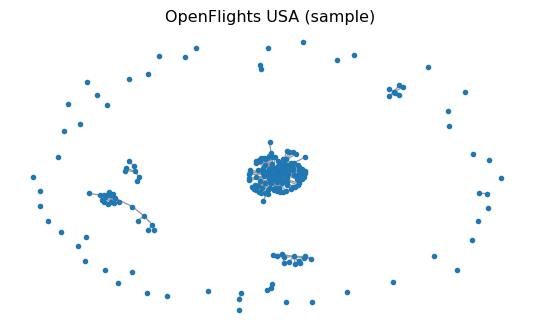

import networkx as nx
import numpy as np
import matplotlib.pyplot as plt
SEED = 7 # fixed seed for reproducibilityPractice: Flights and Other Networks
Module 5: Complex Networks
This page continues Practice: Real Networks. Pick the USA flights network or a network of your own instead of the Enron network. Keep the same seed protocol: a fixed SEED, and SEED + r for trial r.
USA flights network
The USA Flights graph used here is a preprocessed snapshot built from OpenFlights airport/route data (Patokal 2017). It is commonly used to study connectivity, robustness, and hub structure.

Load and check the flights data
Use the local GraphML file if you cloned this repository:
data/openflights/openflights_usa.graphml.gz
If you are working from the rendered website and do not have the data/ folder, download the exact same file from this repository:
https://raw.githubusercontent.com/daniprec/BAM-Applied-Math-Lab/main/data/openflights/openflights_usa.graphml.gz
import networkx as nx
from pathlib import Path
import urllib.request
path = Path("data/openflights/openflights_usa.graphml.gz")
if not path.exists():
url = "https://raw.githubusercontent.com/daniprec/BAM-Applied-Math-Lab/main/data/openflights/openflights_usa.graphml.gz"
path.parent.mkdir(parents=True, exist_ok=True)
urllib.request.urlretrieve(url, path)
G = nx.read_graphml(path)
G = nx.Graph(G) # simplify to an undirected graph
print("N, E =", G.number_of_nodes(), G.number_of_edges())
print("Is connected?", nx.is_connected(G))
Optional warm-up: node attributes and itineraries
The OpenFlights data comes with node attributes (metadata) stored in the GraphML.
airport = next(iter(G.nodes))
print("Example airport:", airport)
print("Attributes:", G.nodes[airport])You can also ask simple connectivity questions:
a, b = "IND", "FAI" # pick two IATA codes that exist in the graph
print("Direct flight?", G.has_edge(a, b))
print("Path exists?", nx.has_path(G, a, b))
# Fewest flights itinerary (unweighted shortest path)
print("Itinerary:", nx.shortest_path(G, a, b))Basic properties of the flights network
In addition to core connectivity/clustering metrics, report the top-10 nodes by degree centrality and one other centrality metric (betweenness, PageRank, etc.) with a brief interpretation.
Try these metrics:
num_nodes = G.number_of_nodes()
num_edges = G.number_of_edges()
avg_degree = sum(dict(G.degree()).values()) / num_nodes
print(num_nodes, num_edges, avg_degree)Explore hubs
Exercise
Compute the degree centrality of every airport and print the 10 airports with the highest values.
import networkx as nx
centrality = nx.degree_centrality(G)
# TODO: sort and print top 10 airports
Solution
The same sorting pattern as for betweenness on the Enron network works here. The name attribute stored in the GraphML file gives the full airport name.
import networkx as nx
centrality = nx.degree_centrality(G)
top10 = sorted(centrality.items(), key=lambda item: item[1], reverse=True)[:10]
for airport, value in top10:
print(f"{airport}: {value:.3f} {G.nodes[airport].get('name', '')}")On the local file the top three are Atlanta (ATL), Chicago O’Hare (ORD) and Denver (DEN), each with a direct connection to more than a quarter of all airports.
Questions to explore
- Which airports act as hubs? Your answer will matter for the epidemic simulations later.
- How does the network change if you remove the top hub?
- Is the graph connected, or are there isolated components?
Your own network
If you prefer, you can choose any real network instead of Enron or USA Flights.
Source the data
Your data must come from a trusted source. In your report, include:
- source URL,
- source organization (who publishes/maintains it),
- date accessed,
- file format and any preprocessing you performed.
Accepted source types include university/government open-data portals, curated research repositories, or peer-reviewed supplementary datasets.
Characterize the structure
Report the same core metrics as for the Enron and flights networks:
- \(N\), \(E\), average degree, density,
- connected components + largest component size,
- clustering,
- top-10 by degree centrality + one additional centrality metric.
Choose a propagation process
You may choose one of these:
- Default: SIS and SIR.
- Alternative: another process such as fake-news diffusion, independent cascade, threshold adoption, or rumor spreading.
For the alternative, clearly define your node states and transition rules.
The next step is the same for every network: Practice: Propagation.
References
Patokal, Jani. 2017. “OpenFlights Data Repository (Airport, Airline, and Route Snapshots).” GitHub repository snapshot. https://github.com/jpatokal/openflights/tree/5d623a6969a1adee7961cf1c9a8a212c4a784713/data.